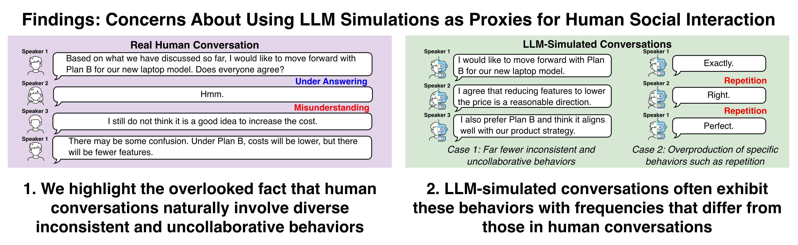
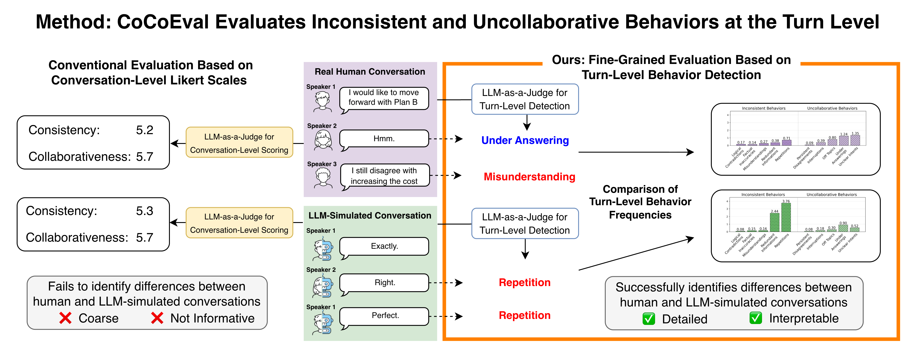
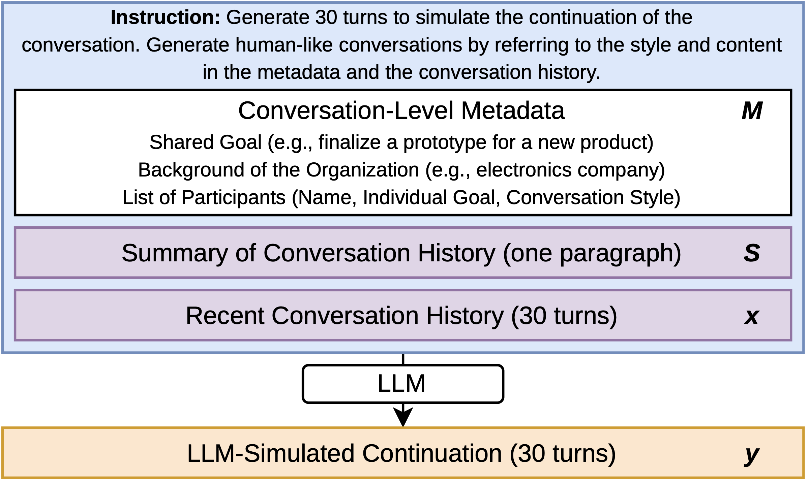
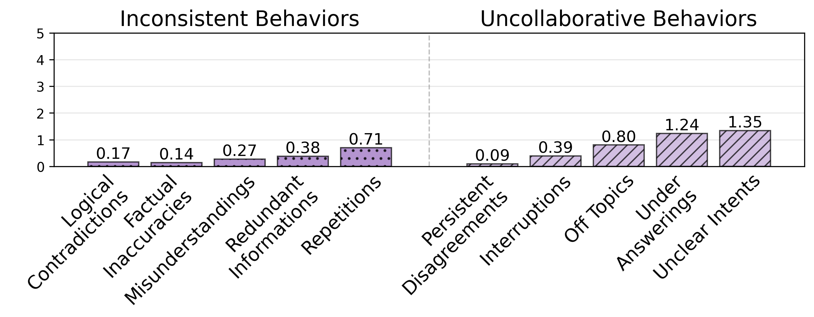
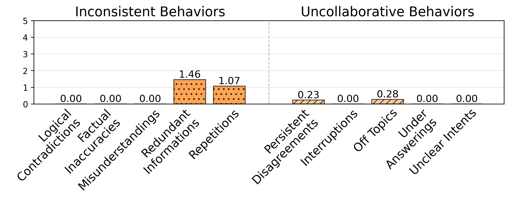
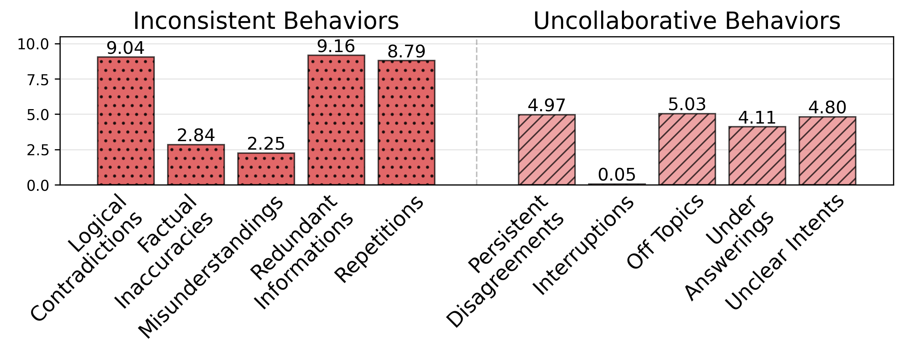
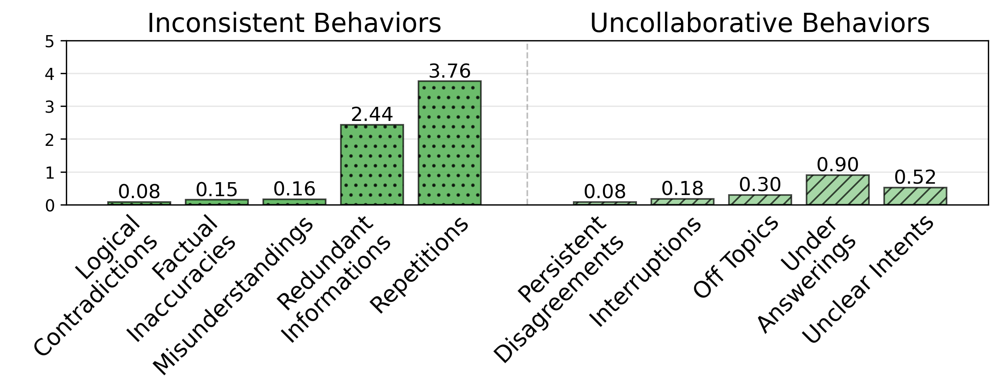

BibTeX

Real human conversations are full of small imperfections, such as vague answers and misunderstandings. Conversations simulated by LLMs often lack these imperfections, or overproduce a few of them, such as repetition.
Researchers increasingly use large language models (LLMs) to simulate conversations between people: the LLM writes every participant's utterances in a meeting, a debate, or a social media thread. These simulated conversations are used to prototype social platforms, test hypotheses in social science, and forecast how people might respond to new policies. This raises a basic question: how close are these simulated conversations to the real thing?
Real human conversations are not perfectly consistent or collaborative. People misunderstand each other, repeat themselves, interrupt, go off topic, and dodge questions. These behaviors are a natural part of how humans interact, and they shape what happens next in a conversation, such as clearing up a misunderstanding or persuading someone who disagrees. If we want LLMs to stand in for humans, their simulated conversations should include these behaviors about as often as humans do. However, previous evaluations (1) have largely treated "more consistent" and "more collaborative" as "better", and (2) have relied on coarse, conversation-level scores (for example, "consistency: 5.2 out of 10") that do not reveal what is different.
We introduce CoCoEval, an evaluation framework with two parts. (1) An evaluation scheme that checks each turn of a conversation for 10 types of inconsistent and uncollaborative behaviors, listed below, so we can compare how often each one appears in human and simulated conversations. (2) CoCoEvalBench, a benchmark built from real-world meetings and debates in which an LLM is asked to continue a human conversation for 30 turns.
Using CoCoEval, we compare human conversations with those simulated by GPT-4.1, GPT-5.1, and Claude Opus 4. We find that (1) with standard prompting, LLM-simulated conversations contain far fewer inconsistent and uncollaborative behaviors than human conversations, and (2) prompt engineering and fine-tuning on human conversations do not give reliable control: they tend to overproduce a few specific behaviors, such as repetition, instead of matching the human distribution. These gaps are invisible to conventional conversation-level scores. Our results raise concerns about using LLM simulations as proxies for human social interaction.

Instead of giving a whole conversation a single score, CoCoEval looks at each turn and asks whether it shows any of 10 behaviors. Counting these behaviors makes the differences between human and LLM-simulated conversations visible and easy to interpret.

The simulation task in CoCoEvalBench. Given a description of the meeting (its goal, organization, and participants) and the conversation so far, the LLM writes the next 30 turns for all participants. We then compare these turns with what the real people actually said next.
CoCoEval uses an LLM-as-a-Judge to flag each turn of a conversation for the following behaviors. The point is not that these behaviors are bad. They are a normal part of human conversation, and a realistic simulation should include them at human-like frequencies.
| Behavior | What it means | Example |
|---|---|---|
| Inconsistent Behaviors | ||
| Logical Contradiction | Saying something that contradicts what the same speaker said earlier. | "The remote runs on a single AA battery," and later, "It requires two AA batteries." |
| Factual Inaccuracy | Stating something that is factually wrong. | Claiming that infrared signals can pass through walls. |
| Misunderstanding | Misinterpreting what another participant said. | One person says the remote has only a touch screen; another later assumes it has physical buttons. |
| Redundant Information | Talking at length without adding anything new. | A long explanation about previous projects that adds no new information. |
| Repetition | Repeating something already said in the conversation. | "I will bring the documents." "So you will bring the documents, right?" |
| Uncollaborative Behaviors | ||
| Persistent Disagreement | Continuing to reject others' positions after consensus or supporting evidence. | Rejecting a plan even after everyone else agrees and gives evidence for it. |
| Interruption | Cutting off another speaker. | Breaking in mid-explanation and leaving the other's sentence unfinished: "... the key point is" |
| Off Topic | Drifting away from the current topic. | Sharing unrelated personal stories in the middle of a project meeting. |
| Under Answering | Giving an evasive reply that does not answer the question. | Asked "Will this policy increase taxes?", replying "We are focused on supporting working families." |
| Unclear Intent | Being ambiguous about what one actually means. | Asked to agree or disagree, responding only with "Maybe." |
The graphs below show how many turns, out of every 30, contain each behavior. The human graph is the target: a good simulation should look like it. Vanilla prompting produces almost none of these behaviors. Taxonomy-guided prompting, which tells the LLM about the 10 behaviors and how often humans exhibit them, overshoots by a wide margin (note the larger y-axis). Fine-tuning on human conversations mostly teaches the LLM to repeat itself. None of the setups reproduces the human pattern.
Human Conversations

GPT-4.1, Vanilla Prompting

GPT-4.1, Taxonomy-Guided Prompting

GPT-4.1, Fine-Tuned on Human Conversations

Number of turns exhibiting each behavior per 30-turn continuation, averaged over 300 conversations in CoCoEvalBench (GPT-4.1 generating one turn per call, evaluated by o4-mini). The y-axis for taxonomy-guided prompting uses a different scale. The paper also reports results for GPT-5.1 and Claude Opus 4.